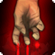

Traits raciaux
Traits raciaux
 Augmentation de caractéristique : +2 à un attribut et à son maximum
Augmentation de caractéristique : +2 à un attribut et à son maximum Alignement : Souvent Loyal Bon, mais diversité marquée selon l’histoire personnelle.
Alignement : Souvent Loyal Bon, mais diversité marquée selon l’histoire personnelle. Langues : Commun, Sentinelle
Langues : Commun, Sentinelle Vitesse de déplacement : 7.5 mètres
Vitesse de déplacement : 7.5 mètres Compétences supplémentaires : Athlétisme
Compétences supplémentaires : Athlétisme Compétences d'Union : Endurance
Compétences d'Union : Endurance Poussée sanguine Spécial
Activé au début d'un combat pour subir 1/2/3/4 point de vie de dégâts chaque tour au début du tour du Sentinelle, mais inflige un supplément de 1d3/1d4/1d6/1d8 de dégâts pour le premier jet de dégâts à chaque tour. Ces valeurs évoluent aux niveaux 5, 10, 15 et 20.
 1 PA (Action Bonus)
1 PA (Action Bonus)